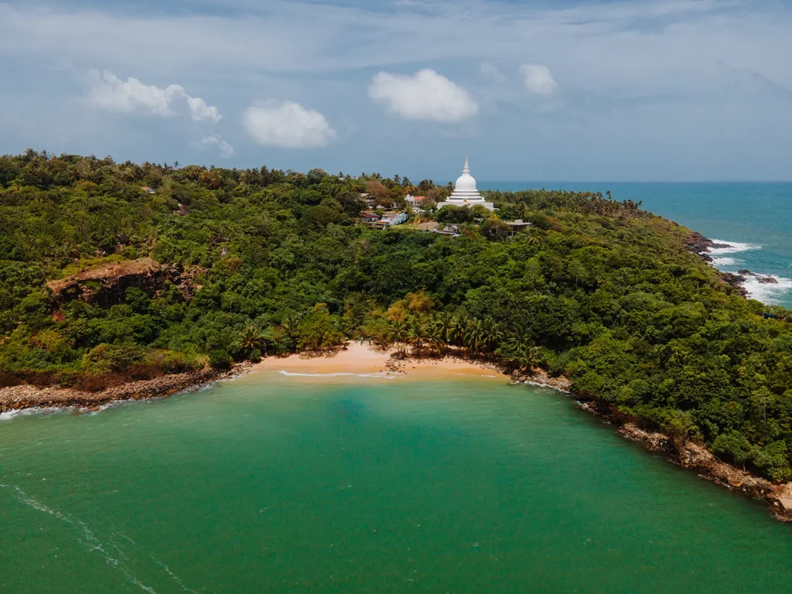
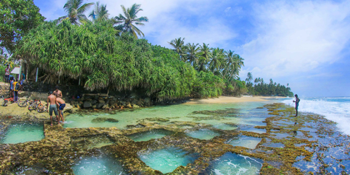

Heritage Sites present in Galle
1.Galle Fort

2.Jungle Beach
3.Martin Wickramasinghe Folk Museum

4.Galle Light House

5.Maritime Archeology Museum
6.Rumassala Sanctuary
7.Underwater Museum - Galle
8.Unawatuna Beach

9.Talpe Beach
10.Stilt Fishermen

Heritage Sites present in Galle |
1.Galle Fort |
|
2.Jungle Beach |
|  |
3.Martin Wickramasinghe Folk Museum |
|
4.Galle Light House |
|
5.Maritime Archeology Museum |
6.Rumassala Sanctuary |
7.Underwater Museum - Galle |
8.Unawatuna Beach |
|
9.Talpe Beach |
|  |
10.Stilt Fishermen |
|